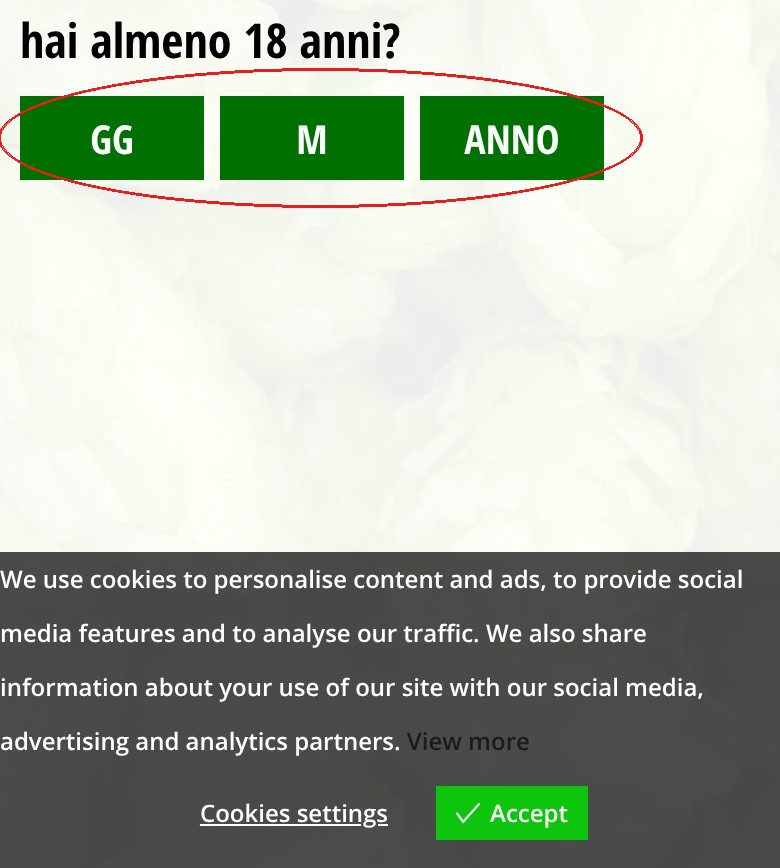

1
Prima di vedere una birra, serve una data
All'apertura c'è un controllo dell'età con tre pulsanti (GG, M, ANNO) e un avviso cookie in inglese che copre il fondo dello schermo. Su telefono la pagina è bloccata finché non lo si supera.